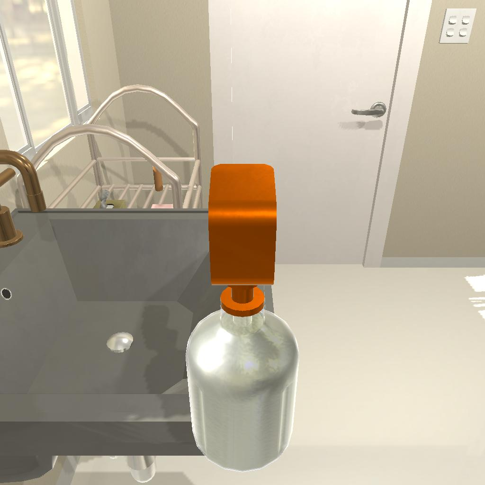

---------------------------------------------------------task: 28---------------------------------------------------------
--------------------------------------------------------------------------------------------------------------------------------------------------------------------
--------------------------------------------------------------------------------------------------------------------------------------------------------------------
Step:--------------------------------------------------------------------------16-------------------------------------------------------------------------------
----------------------------------------
VLM Prompt:
**Task**
Please perform as an embodied AI agent. Our final objective is to find two spraybottle and put them in toilet. Below is the plan for completing the task, the current observation, alongside historical data and admissible actions for the next step. Please determine the best action for the next step!
**Plan**
Below is a detailed step-by-step plan to complete the task.
1. Find a spray bottle.
2. Pick up the spray bottle.
3. Locate the toilet.
4. Place the picked-up spray bottle in the toilet.
5. Find another spray bottle.
6. Pick up the second spray bottle.
7. Return to the toilet.
8. Place the second picked-up spray bottle in the toilet with the first one.
**Current Observation**
Displayed is an image capturing the current position of the agent.
Objects in The Image: ['dish soap bottle', 'kitchen sink', 'faucet', 'dish rack', 'window', 'door', 'light switch']
**History Information**
Displayed are the previous observations with their corresponding actions.
State 0:
No history.
State 1:
1. Step Index in the Plan: 1
2. Objects: Toilet, Spray Bottle (on top of the toilet tank)
3. Action: go to toilet 1
State 2:
1. Step Index in the Plan: 2
2. Objects: Toilet, Toilet Tank, Soap Dispenser, Window Blinds, Wall, Spray Bottle
3. Action: take soapbottle 1 from toilet 1
State 3:
1. Step Index in the Plan: 4
2. Objects: Lamp, Window, Blinds, Power Outlet, Wall, Table, Incorrectly Picked-up Soapbottle
3. Action: put soapbottle 1 in/on toilet 1
State 4:
1. Step Index in the Plan: 5
2. Objects: Toilet, Toilet Paper Roll, Toilet Paper Holder, Soap Dispenser (mistaken for spray bottle)
3. Action: go to cart 1
State 5:
1. Step Index in the Plan: 5
2. Objects: Cart, Bottles with Pumps (potential spray bottles)
3. Action: take spraybottle 1 from cart 1
State 6:
1. Step Index in the Plan: 5
2. Objects: Spray Bottle, Dish Rack, Sink
3. Action: examine spraybottle 1
State 7:
1. Step Index in the Plan: 6
2. Objects: Spray Bottle, Dish Rack, Sink
3. Action: go to toilet 1
State 8:
1. Step Index in the Plan: 4
2. Objects: Spray Bottle, Soap Dispenser
3. Action: put spraybottle 1 in/on toilet 1
State 9:
2. Step Index in the Plan: Next after placing one spray bottle
3. Objects: Toilet, Toilet Paper Holder, Spray Bottle, Soap Dispenser, Shower Door
3. Action: take spray bottle from toilet
State 10:
1. Step Index in the Plan: 5
2. Objects: Spray Bottle, White Box, Window with Frosted Glass
3. Action: examine soapbottle 1
State 11:
1. Step Index in the Plan: 5
2. Objects: Spray Bottle, Towel Dispenser, Mirror
3. Action: go to cart 1
State 12:
1. Step Index in the Plan: Last completed step was placing one spray bottle in the toilet.
2. Objects: Spray Bottle, Toilet
3. Action: go to cart 1
State 13:
2. Step Index in the Plan: 5
3. Objects: Sink, Dish Soap Bottle, Sponge, Dish Rack
4. Action: go to drawer 1
State 14:
1. Step Index in the Plan: 5
2. Objects: Spray Bottle, Countertop
3. Action: go to countertop 1
State 15:
1. Step Index in the Plan: 5
2. Objects: Countertop, Spray Bottle, Cabinet
3. Action: go to drawer 2
State 16:
1. Step Index in the Plan: 5
2. Objects: Bathroom Countertop, Various Objects, Spray Bottle
3. Action: go to sink 1
**Admissible Actions**
(1): go to bathtub 1
(2): go to bathtubbasin 1
(3): go to cart 1
(4): go to garbagecan 1
(5): go to sinkbasin 1
(6): go to drawer 1
(7): go to drawer 3
(8): go to drawer 4
(9): go to toilet 1
(10): go to toiletpaperhanger 1
(11): put soapbottle 1 in/on sink 1
(12): clean soapbottle 1 with bathtub 1
(13): clean soapbottle 1 with bathtubbasin 1
(14): clean soapbottle 1 with sink 1
(15): clean soapbottle 1 with sinkbasin 1
(16): examine soapbottle 1
**Analysis Guideline**
1. Analyze the history and current observation, and then determine our current step in the plan and our current place.
2. List all visible objects related to the task in the current observation, without summarizing any as "various items."
3. Analyze the objects in the current observation based on the history and the requirements for the current step, and then determine if we can complete the step with the current observation.
4. Analyze and decide on the most appropriate action to take.
5. Summarize the analysis using the following format: "Analysis: [The summarization of the analysis], The Most Appropriate Action: (i which is the integer.): [Selected action]"
**Notes**
1. We must complete each step of the plan in order and cannot skip steps when the previous ones are not finished.
2. For "Go to" actions listed as "go to xxx [n]", interpret this as there are n distinct actions available: "go to xxx 1", "go to xxx 2", ..., "go to xxx n". Select one specific action from these options instead of using "go to xxx [n]".
3. If receptacles such as drawers, cabinets, and so forth are closed in the current observation, we may try to open them.
4. Pay attention to synonyms and ensure clarity in the terms used.
5. We must determine and provide the single action which must be in the **Admissible Actions**.
6. If there is no history available, we are at the first step and the current place is "Unknown".
**Answer**
Please select the most suitable action by following the **Analysis Guideline**, keeping the above **Notes** in mind.
----------------------------------------
----------------------------------------
VLM Response:
Analysis: Based on the history information and the current step in the plan, which involves finding a second spray bottle, the agent has repeatedly mistaken soap dispensers for spray bottles. The current observation shows a dish soap bottle on the countertop near a kitchen sink, which is not the object we are looking to find according to the plan. We must continue searching for a second spray bottle. None of the objects listed in the current observation are spray bottles, thus we cannot complete the current step with this observation. Since the "go to" actions are intended to move the agent to various locations, we should choose an action that could potentially lead to finding a spray bottle. Returning to the cart might be the most appropriate action since carts often hold cleaning supplies, including spray bottles.
The Most Appropriate Action: (3): go to cart 1
----------------------------------------
----------------------------------------
>>> Refine VLM Response and Get Pure Action: go to cart 1
----------------------------------------
-----------------------------------------------------------------
Running time: 9.719906091690063 seconds
Total Money: 0
-----------------------------------------------------------------
-----------------------------------------------------------------
Summarization Prompt:
**Context**
Analysis: Since there is no history information, we are at the first step in the plan, which is to find a statue. The current place is unknown. In the current observation, we see a floorlamp next to an armchair with a small table that has a small object on it, which could potentially be the statue we are looking for. Since the plan requires us to find a statue first and it appears there might be one on the table next to the armchair, we should investigate this object to determine if it is the statue we need.
The Most Appropriate Action: (1): go to armchair 1
**Summary**
1. Step Index in the Plan: 1
2. Objects: Floorlamp, Armchair, Small Table, Small Object (potential statue)
3. Action: go to armchair 1
**Context**
Analysis: Based on the history information and the current step in the plan, which involves finding a second spray bottle, the agent has repeatedly mistaken soap dispensers for spray bottles. The current observation shows a dish soap bottle on the countertop near a kitchen sink, which is not the object we are looking to find according to the plan. We must continue searching for a second spray bottle. None of the objects listed in the current observation are spray bottles, thus we cannot complete the current step with this observation. Since the "go to" actions are intended to move the agent to various locations, we should choose an action that could potentially lead to finding a spray bottle. Returning to the cart might be the most appropriate action since carts often hold cleaning supplies, including spray bottles.
The Most Appropriate Action: (3): go to cart 1
Please summarize the context by following above examples when providing the summary, and ensure that only the summary is included, without any extra explanation.
**Summary**
-----------------------------------------------------------------
-----------------------------------------------------------------
Summarization Response:
1. Step Index in the Plan: Ongoing, searching for a second spray bottle
2. Objects: Dish Soap Bottle, Countertop, Kitchen Sink
3. Action: go to cart 1
-----------------------------------------------------------------
-----------------------------------------------------------------
Text Observation:You arrive at loc 2. On the cart 1, you see a tissuebox 1, a tissuebox 2, a faucet 1, and a toiletpaper 1.
-----------------------------------------------------------------
UNSUCCEED